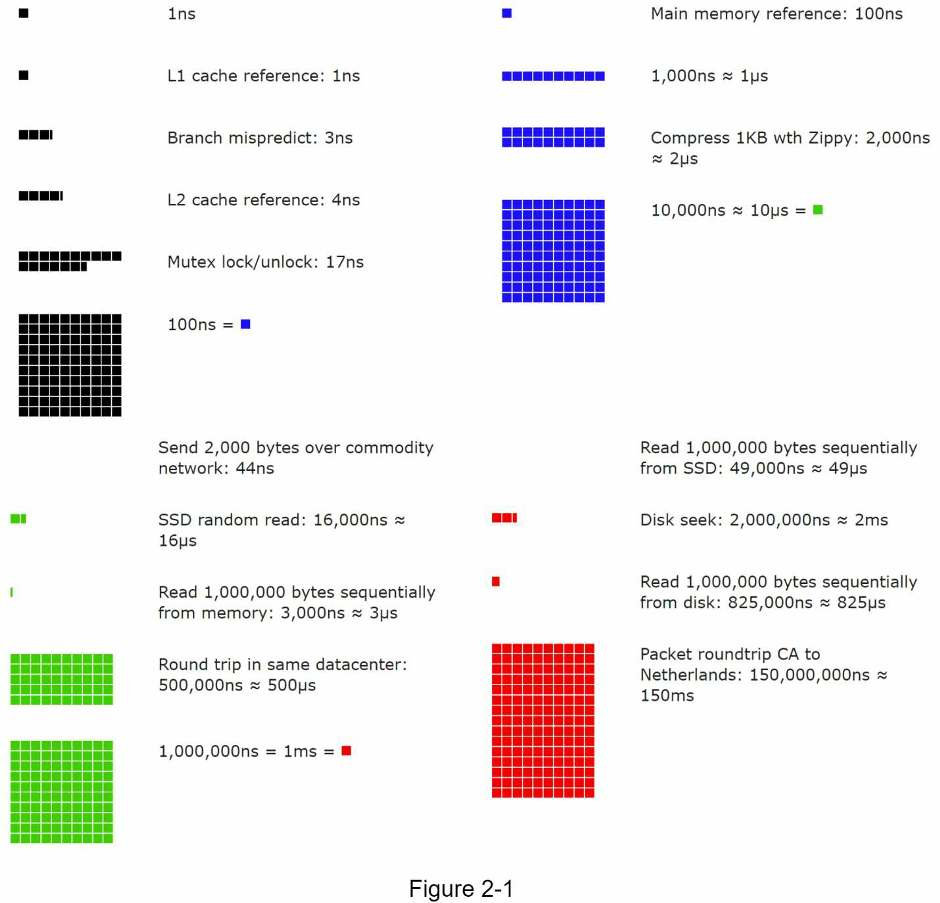

Chapter 2 · Foundations
Back-of-the-Envelope Estimation
The few numbers you need to size a system on a whiteboard (powers of two, latencies, nines of availability) and the routine for turning users into QPS and storage, worked through on the book's Twitter example.
TL;DR
- Goal: quick estimates from thought experiments and common performance numbers that show which designs meet the requirements. The process is graded, not precision.
- Powers of two: 210 ≈ thousand (KB), 220 ≈ million (MB), 230 ≈ billion (GB), 240 ≈ trillion (TB), 250 ≈ quadrillion (PB). 1 ASCII character = 1 byte = 8 bits.
- Latency lessons: memory is fast, disk is slow: avoid disk seeks. Compression is cheap: compress before sending over the internet. Cross-region trips are slow.
- Availability: each extra nine cuts downtime 10×: 99.9% ≈ 8.77 h/year, 99.99% ≈ 52.6 min/year. Big cloud SLAs are ≥ 99.9%.
- QPS = DAU × actions per day ÷ 86,400 s (≈ 105). Peak QPS ≈ 2 × QPS.
- Storage = items per day × size × 365 × years.
- Twitter example: 150 M DAU × 2 tweets → ~3,500 QPS, ~7,000 peak. 10% carry 1 MB media → 30 TB/day → ~55 PB over 5 years.
- Tips: round aggressively, write assumptions down, label every unit.
How to use this in an interview
Estimation is a routine, not mental gymnastics. Run these moves out loud and write each line on the board.
- Check it's wanted, then list assumptions Ask whether the interviewer wants numbers before diving in. Write every assumption down: users, % active daily, actions per user, item size, % with media, retention.
- Users → DAU → QPS DAU × actions per day ÷ 86,400 s. Treat a day as ≈ 105 seconds and round freely.
- Peak QPS Multiply by a peak factor (the book uses 2×) and say which factor you chose.
- Storage Items per day × size, then × 365 × years. Put a unit on every number.
- Use the result Check that your blueprint fits the scale, and extend to the other common asks: cache size and number of servers.
What estimation is for
Estimates tell you which designs can meet the requirements before you build anything.
Jeff Dean (Google Senior Fellow) defines back-of-the-envelope calculations as "estimates you create using a combination of thought experiments and common performance numbers to get a good feel for which designs will meet your requirements."
Interviewers sometimes ask you to estimate system capacity or performance this way. You need three basics, covered next: power of two, latency numbers every programmer should know, and availability numbers.
Power of two
However big the data, the arithmetic reduces to data-volume units based on powers of 2.
A byte is 8 bits. An ASCII character uses one byte.
| Power | Approximate value | Full name | Short name |
|---|---|---|---|
| 210 | 1 Thousand | 1 Kilobyte | 1 KB |
| 220 | 1 Million | 1 Megabyte | 1 MB |
| 230 | 1 Billion | 1 Gigabyte | 1 GB |
| 240 | 1 Trillion | 1 Terabyte | 1 TB |
| 250 | 1 Quadrillion | 1 Petabyte | 1 PB |
Table 2-1. Each step up is ×1,024 ≈ ×1,000, so converting units means adding or removing three zeros: 30 million × 1 MB = 30 TB.
Latency numbers every programmer should know
Exact values age, but the ratios between memory, disk and network still decide designs.
Jeff Dean published the length of typical computer operations in 2010 (Table 2-2). Computers have since become faster, so some numbers are outdated, but they still show which operations are fast and which are slow. A Google engineer later built a tool that projects the numbers forward in time; its 2020 values (Figure 2-1) are in the right-hand column.
| Operation | Dean, 2010 (Table 2-2) | 2020 (Figure 2-1) |
|---|---|---|
| L1 cache reference | 0.5 ns | 1 ns |
| Branch mispredict | 5 ns | 3 ns |
| L2 cache reference | 7 ns | 4 ns |
| Mutex lock/unlock | 100 ns | 17 ns |
| Main memory reference | 100 ns | 100 ns |
| Compress 1 KB with Zippy | 10,000 ns = 10 µs | 2,000 ns ≈ 2 µs |
| Send 2 KB over the network | 20,000 ns = 20 µs (1 Gbps) | 44 ns (commodity network) |
| SSD random read | — | 16,000 ns ≈ 16 µs |
| Read 1 MB sequentially from memory | 250,000 ns = 250 µs | 3,000 ns ≈ 3 µs |
| Read 1 MB sequentially from SSD | — | 49,000 ns ≈ 49 µs |
| Round trip within the same datacenter | 500,000 ns = 500 µs | 500 µs |
| Disk seek | 10,000,000 ns = 10 ms | 2,000,000 ns ≈ 2 ms |
| Read 1 MB sequentially from the network | 10,000,000 ns = 10 ms | — |
| Read 1 MB sequentially from disk | 30,000,000 ns = 30 ms | 825,000 ns ≈ 825 µs |
| Send packet California → Netherlands → California | 150,000,000 ns = 150 ms | 150 ms |
Units: 1 ns = 10−9 s. 1 µs = 10−6 s = 1,000 ns. 1 ms = 10−3 s = 1,000 µs = 1,000,000 ns.

What the numbers tell you
| Conclusion | The numbers behind it |
|---|---|
| Memory is fast but the disk is slow. | Memory reference 100 ns vs disk seek 10 ms (~100,000×). Reading 1 MB: 250 µs from memory vs 30 ms from disk. |
| Avoid disk seeks if possible. | One 10 ms seek costs as much as 20 round trips inside a datacenter. |
| Simple compression algorithms are fast. | Compressing 1 KB with Zippy: 10 µs (2 µs by 2020). |
| Compress data before sending it over the internet if possible. | Compressing costs microseconds; network transfers cost milliseconds. |
| Data centers are usually in different regions, and sending data between them takes time. | Round trip in one datacenter: 0.5 ms. California ↔ Netherlands: 150 ms (300×). |
Availability numbers
Uptime is quoted in nines. Each extra nine divides the allowed downtime by 10.
High availability is the ability of a system to stay continuously operational for a desirably long time. It's measured as a percentage: 100% means zero downtime, and most services fall between 99% and 100%.
A service level agreement (SLA) is an agreement between you (the service provider) and your customer that formally defines the level of uptime your service will deliver. Amazon, Google and Microsoft set their cloud SLAs at 99.9% or above.
| Availability | Nines | Downtime per day | Downtime per year |
|---|---|---|---|
| 99% | 2 | 14.40 minutes | 3.65 days |
| 99.9% | 3 | 1.44 minutes | 8.77 hours |
| 99.99% | 4 | 8.64 seconds | 52.60 minutes |
| 99.999% | 5 | 864.00 milliseconds | 5.26 minutes |
| 99.9999% | 6 | 86.40 milliseconds | 31.56 seconds |
Table 2-3. Downtime = (100% − availability) × period. Example: 0.1% of 1,440 minutes a day = 1.44 minutes.
Worked example: Twitter QPS and storage
State the assumptions, then turn users into DAU, DAU into QPS, and posts into bytes.
These numbers are for the exercise only; they are not Twitter's real numbers.
Assumptions
| Assumption | Value |
|---|---|
| Monthly active users (MAU) | 300 million |
| Share of users active daily | 50% |
| Tweets per user per day (average) | 2 |
| Tweets containing media | 10% |
| Data retention | 5 years |
| Tweet size | tweet_id 64 bytes · text 140 bytes · media 1 MB |
Estimates
DAU = 300 million × 50% = 150 million
Tweet QPS = 150 million × 2 tweets ÷ 24 h ÷ 3,600 s ≈ 3,500
Peak QPS = 2 × QPS ≈ 7,000
Media per day = 150 million × 2 × 10% × 1 MB = 30 TB
Media, 5 years = 30 TB × 365 × 5 ≈ 55 PBThe book estimates media storage only. That's reasonable: IDs and text add 300 million × (64 + 140) bytes ≈ 61 GB a day, about 0.2% of the media volume. (Chapter 7's Snowflake IDs are 64 bits = 8 bytes, so the book's 64-byte tweet_id is a generous over-estimate. It doesn't change the result.)
Prefilled with the book's Twitter assumptions. Change any input and the arithmetic updates. (To size text instead, set media to 100% and the size to the bytes per post.)
Tips
Estimation is about the process. Interviewers are testing how you solve problems, not your arithmetic.
- Round and approximate. Complicated math is hard in an interview and precision isn't expected. "99,987 / 9.1" becomes "100,000 / 10" = 10,000.
- Write down your assumptions so you can refer back to them later.
- Label your units. A bare "5" could mean 5 KB or 5 MB and can confuse even you. Write "5 MB".
- Practice the commonly asked estimates: QPS, peak QPS, storage, cache, number of servers.
Self-test
What do 210, 220, 230, 240 and 250 bytes approximately equal?
A thousand (1 KB), a million (1 MB), a billion (1 GB), a trillion (1 TB) and a quadrillion (1 PB) bytes.
Put these in order, fastest first: disk seek, L1 cache reference, round trip within a datacenter, main memory reference, California ↔ Netherlands round trip.
L1 cache (0.5 ns) → main memory (100 ns) → datacenter round trip (500 µs) → disk seek (10 ms) → California ↔ Netherlands (150 ms).
Roughly how much slower is a disk seek than a main memory reference?
About 100,000×: 10 ms vs 100 ns.
What five conclusions does the book draw from the latency numbers?
- Memory is fast but the disk is slow.
- Avoid disk seeks if possible.
- Simple compression algorithms are fast.
- Compress data before sending it over the internet if possible.
- Data centers are in different regions, and sending data between them takes time.
How much downtime does 99.99% availability allow per year? Per day?
About 52.6 minutes per year, or 8.64 seconds per day.
What is an SLA, and where do the big cloud providers set theirs?
A service level agreement: a formal agreement between a service provider and its customer defining the level of uptime the service will deliver. Amazon, Google and Microsoft set theirs at 99.9% or above.
Walk through the Twitter QPS estimate.
300 M MAU × 50% = 150 M DAU. 150 M × 2 tweets ÷ 86,400 s ≈ 3,500 QPS. Peak = 2 × QPS ≈ 7,000.
Walk through the Twitter media storage estimate.
150 M DAU × 2 tweets × 10% with media × 1 MB = 30 TB per day. × 365 × 5 years ≈ 55 PB.
Why is it fine to estimate only media storage in the Twitter example?
IDs and text are tiny by comparison: 300 M tweets × ~204 bytes ≈ 61 GB a day, about 0.2% of the 30 TB of media.
What's a quick way to convert requests per day into QPS?
A day has 86,400 s ≈ 105, so divide daily requests by ~100,000. For example, 1 million a day ≈ 12 per second.
How should you handle "99,987 / 9.1" in an interview?
Round it: 100,000 / 10 = 10,000. Precision isn't expected; the process is what's graded.
Why does the book insist on labeling units?
A bare "5" could mean 5 KB or 5 MB, which can confuse you later. Writing "5 MB" removes the ambiguity.
Which back-of-the-envelope estimates are most commonly asked?
QPS, peak QPS, storage, cache and number of servers.
Terms to know
- Back-of-the-envelope estimation
- A rough estimate from thought experiments and common performance numbers, used to judge which designs meet the requirements.
- QPS
- Queries per second: average request rate, usually DAU × actions per day ÷ 86,400.
- Peak QPS
- The highest expected request rate; the book assumes 2 × average QPS.
- DAU / MAU
- Daily / monthly active users.
- Latency
- How long an operation takes, from nanoseconds (cache) to hundreds of milliseconds (cross-continent network).
- ns, µs, ms
- Nanosecond (10−9 s), microsecond (10−6 s), millisecond (10−3 s). Each is 1,000× the previous.
- Disk seek
- Moving a disk's read head to the data's location; ~10 ms in Dean's table, one of the slowest local operations.
- Zippy
- A simple, fast compression algorithm used at Google; the compression example in Dean's table.
- High availability
- A system's ability to stay operational continuously for a desirably long time, measured as a percentage of uptime.
- SLA
- Service level agreement: the uptime a provider formally promises its customers.
- Nines
- Shorthand for availability: "four nines" = 99.99%.